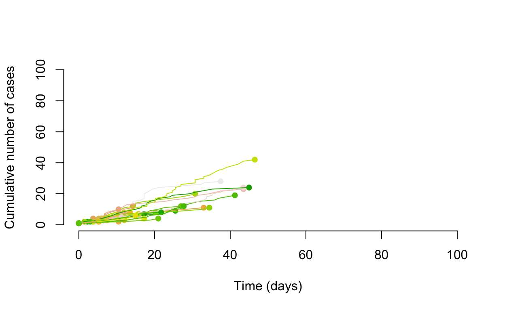
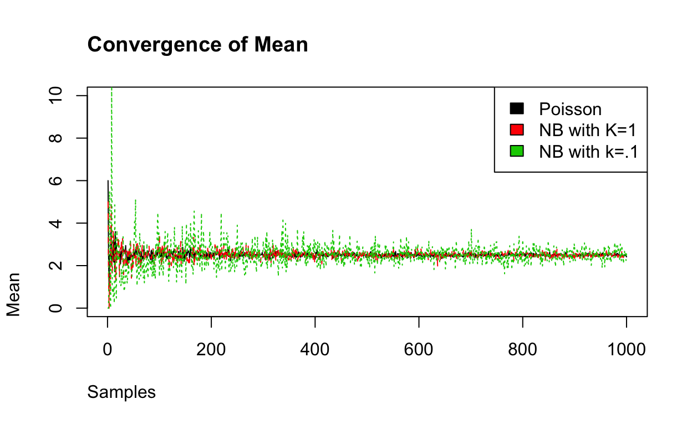
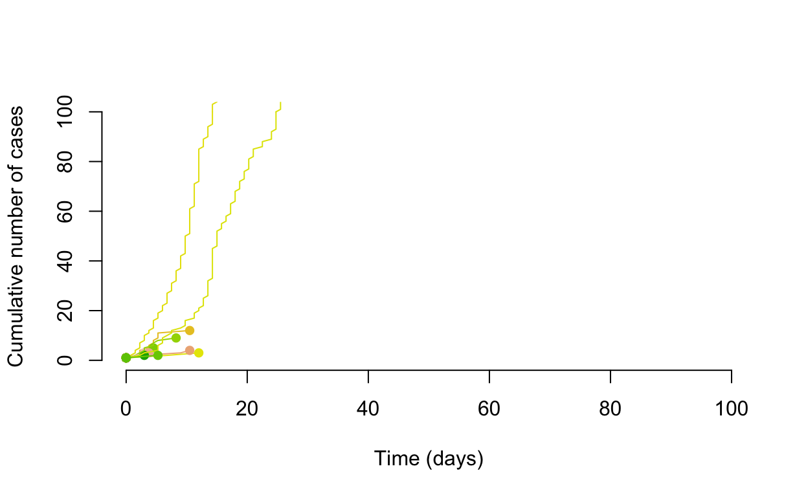
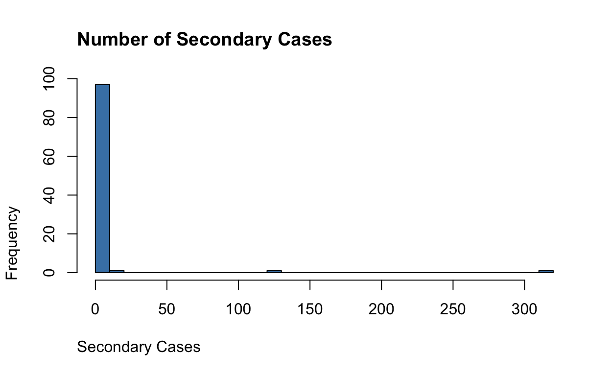

Super-spreading events can be characterised by a single case spreading to a larger than expected number of people. This phenomenon can be well-represented by a negative binomial distribution versus a standard Poisson distribution. In this post I review the overdispersion factor and how it can be parameterised in a model.
This is partially just for me to remember how to parameterise a Negative Binomial distribution. Typically, the Negative Binomial is used for the number of Bernoulli trials before the first success or number of successes is achieved (and thus a discrete distribution). For some probability of success, \(p\), given \(r\) failures and \(k\) successes we can define the probability mass function as:
\[ {k + r - 1 \choose k} * (1-p)^r*p^k \]
That is at least the textbook definition. Typically we encounter the negative binomial distribution as a way to deal with over-dispersed Poisson processes (and thus is really a mixture model of gamma and poison distributions).
In outbreaks and epidemics we are typically interested in the basic reproduction number, \(R_0\), which represents the average number of secondary infections caused by an index infection in a fully susceptible population. One could simulate such a branching process using a Poisson branching process.
Borrowing some simulation code from Althaus (2015) we can first simulate tranmission chains with a Poisson distribution and an R of .8.
R0 <- 2.5
k <- 1
gamma_params <- epitrix::gamma_mucv2shapescale(mu = 3,cv = .5)
serial_interval <- distcrete::distcrete(name = "gamma", gamma_params$scale,
shape =gamma_params$shape,
w = 0)
# Set seed for random number generator
set.seed(645)
# Number of simulation runs
runs <- 1e2
# Number of initial cases
seed <- 1
# Initialize plot
plot(NA,xlim=c(0,100),ylim=c(0,100),xlab="Time (days)",
ylab="Cumulative number of cases",frame=FALSE)
# Set color scheme for different trajectories
cols <- sample(terrain.colors(runs))
# Simulate outbreak trajectories
for(i in 1:runs) {
cases <- seed
t <- rep(0, seed)
times <- t
while (cases > 0) {
secondary <- rpois(cases,.8)
t.new <- numeric()
for (j in 1:length(secondary)) {
t.new <-
c(
t.new,
t[j] + serial_interval$r(secondary[j])
)
}
cases <- length(t.new)
t <- t.new
times <- c(times, t.new)
}
lines(sort(times),
1:length(times),
col = cols[i],
lwd = 1)
points(max(times), length(times), col = cols[i], pch = 16)
}
One of the buzzwords with the SARS-CoV-2 Pandemic has been super-spreading, and there is evidence that super-spreading events play a large role in the transmission of SARS-CoV-2 (Endo et al. 2020). Super-spreading refers to those index cases which transmit to a larger number of people than would have been expected (Lloyd-Smith et al. 2005). Larger than expected is a bit of a loose definition, do have a way of measuring this using our reproduction number (or even the basic reproduction number). Now it is true that the reproduction number and basic reproduction number are both estimated themselves from the data with associated measurement and missing data problems, but this is a thought exercise so let’s assume we know them.
We measure the degree of super-spreading using the dispersion parameter called k (or \(\phi\)). The closer the dispersion parameter is to 1, the more Poisson-like is the branching process. Conversely, as k the dispersion parameter approaches 0, the more super-spreading events there will be. We can see this as we incease the number of samples that the negative binomial with \(\phi\) converges to the mean of Poisson distribution, while the smaller \(\phi\) does not converge.
sims <- data.frame(
ran_poi <- purrr::map_dbl(1:1000, ~mean(rpois(.x, R0))),
ran_nb <- purrr::map_dbl(1:1000, ~mean(rnbinom(.x, 1, mu = R0))),
ran_nb_ss <- purrr::map_dbl(1:1000, ~mean(rnbinom(.x, .1, mu = R0)))
)
matplot(sims, type = "l",
main = "Convergence of Mean",
xlab = "Samples", ylab = "Mean", adj = 0, ylim = c(0,10))
legend("topright", fill = c(1,2,3),legend = c("Poisson",
"NB with K=1",
"NB with k=.1"))
With the same reproduction number, but a dispersion of 0.1, we can see that some of the transmission chains are much larger. Thus is could be said that super-spreading transmission might be slow to take hold (easy to have chains that terminate quickly), but it can start wildfires; this tranmission pattern and its effect on controlling epidemics is discussed in Fraser et al. (2004).
gamma_params <- epitrix::gamma_mucv2shapescale(mu = 3,cv = .5)
serial_interval <- distcrete::distcrete(name = "gamma", gamma_params$scale,
shape =gamma_params$shape,
w = 0)
# Set seed for random number generator
set.seed(645)
# Number of simulation runs
runs <- 1e2
# Number of initial cases
seed <- 1
# Initialize plot
plot(NA,xlim=c(0,100),ylim=c(0,100),xlab="Time (days)",
ylab="Cumulative number of cases",frame=FALSE)
# Set color scheme for different trajectories
cols <- sample(terrain.colors(runs))
# Simulate outbreak trajectories
collector <- list()
for(i in 1:runs) {
cases <- seed
t <- rep(0, seed)
times <- t
while (cases > 0) {
secondary <-
rnbinom(cases,
.1,
mu = .9)
t.new <- numeric()
for (j in 1:length(secondary)) {
t.new <-
c(
t.new,
t[j] + serial_interval$r(
secondary[j]
)
)
}
cases <- length(t.new)
t <- t.new
times <- c(times, t.new)
}
collector[[i]] <- length(times)
lines(sort(times),
1:length(times),
col = cols[i],
lwd = 1)
points(max(times), length(times), col = cols[i], pch = 16)
}
transmission_chains <- do.call(rbind, collector) - 1
hist(transmission_chains,
breaks = 30,
main = "Number of Secondary Cases",
adj = 0, col = "steelblue", xlab = "Secondary Cases")
Again, borrowing code from Endo et al. (2020) to estimate the proportion of infections that are responsible for a given proportion of cases.
nb_fit <- fitdistrplus::fitdist(data =as.vector(transmission_chains), distr = "nbinom" )
prop_responsible=function(R0,k,prop){
qm1=qnbinom(1-prop,k+1,mu=R0*(k+1)/k)
remq=1-prop-pnbinom(qm1-1,k+1,mu=R0*(k+1)/k)
remx=remq/dnbinom(qm1,k+1,mu=R0*(k+1)/k)
q=qm1+1
1-pnbinom(q-1,k,mu=R0)-dnbinom(q,k,mu=R0)*remx
}
prop_responsible(nb_fit$estimate[[2]],nb_fit$estimate[[1]],.8)
[1] 0.02311288Althaus, Christian L. 2015. “Ebola Superspreading.” The Lancet Infectious Diseases 15 (5): 507–8. https://doi.org/10.1016/S1473-3099(15)70135-0.
Endo, Akira, Centre for the Mathematical Modelling of Infectious Diseases COVID-19 Working Group, Sam Abbott, Adam J. Kucharski, and Sebastian Funk. 2020. “Estimating the Overdispersion in COVID-19 Transmission Using Outbreak Sizes Outside China.” Wellcome Open Research 5 (April): 67. https://doi.org/10.12688/wellcomeopenres.15842.1.
Fraser, Christophe, Steven Riley, Roy M. Anderson, and Neil M. Ferguson. 2004. “Factors That Make an Infectious Disease Outbreak Controllable.” Proceedings of the National Academy of Sciences 101 (16): 6146–51. https://doi.org/10.1073/pnas.0307506101.
Lloyd-Smith, J. O., S. J. Schreiber, P. E. Kopp, and W. M. Getz. 2005. “Superspreading and the Effect of Individual Variation on Disease Emergence.” Nature 438 (7066): 355–59. https://doi.org/10.1038/nature04153.
Text and figures are licensed under Creative Commons Attribution CC BY 4.0. The figures that have been reused from other sources don't fall under this license and can be recognized by a note in their caption: "Figure from ...".
For attribution, please cite this work as
DeWitt (2020, Sept. 1). Michael DeWitt: Negative Binomial Distribution and Epidemics. Retrieved from https://michaeldewittjr.com/dewitt_blog/posts/2020-08-30-negative-binomial-distribution-and-epidemics/
BibTeX citation
@misc{dewitt2020negative,
author = {DeWitt, Michael},
title = {Michael DeWitt: Negative Binomial Distribution and Epidemics},
url = {https://michaeldewittjr.com/dewitt_blog/posts/2020-08-30-negative-binomial-distribution-and-epidemics/},
year = {2020}
}